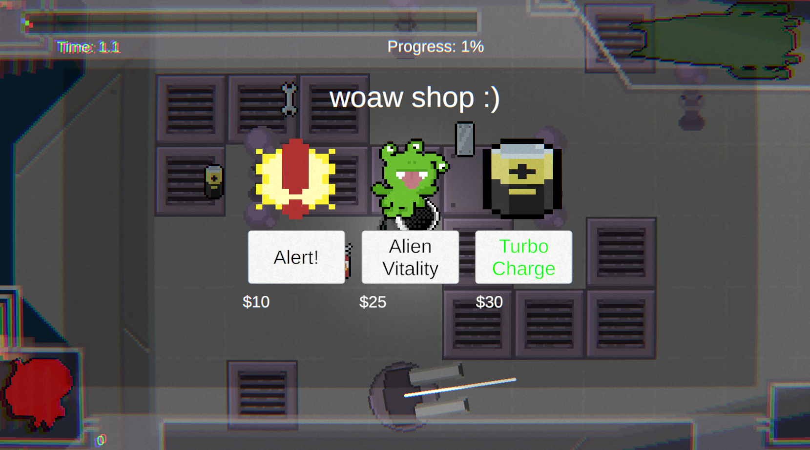
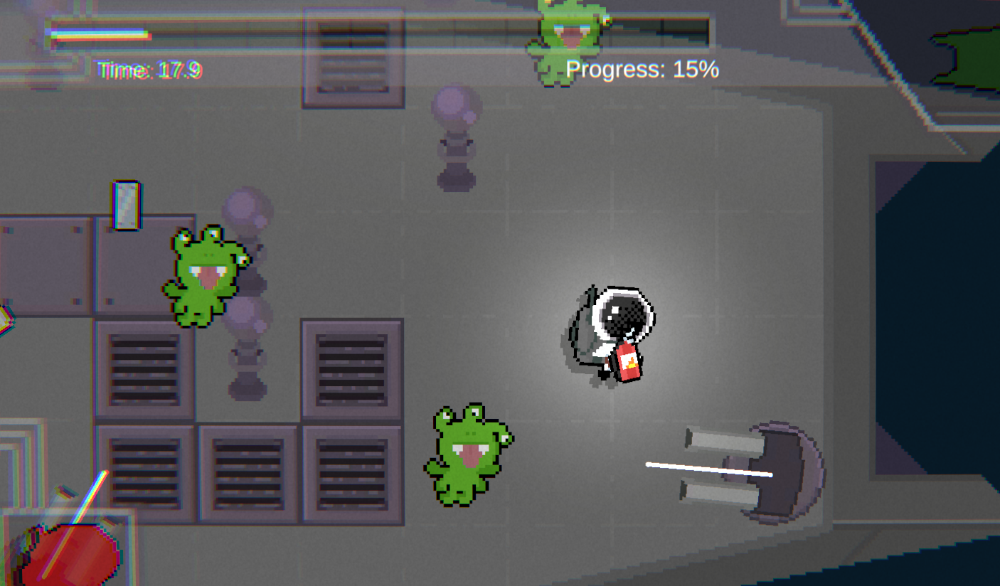
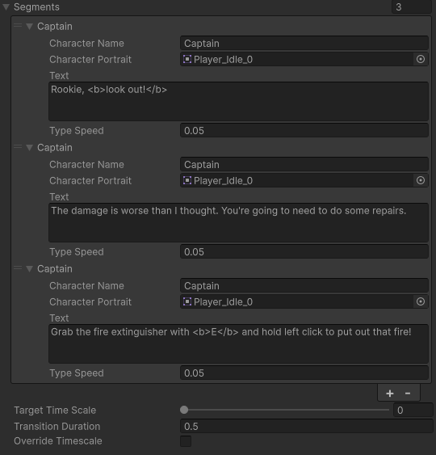

Week 4: Alpha Code

Alpha Code
This week, we finished up the alpha code! This included a complete redesign of the ship and panel flow following feedback, additional enemy types, more interactive panels,
and integrating a full dialogue system for both the tutorial and story beats.
The screenshot above shows the updated gameplay state and the overall look of the ship after the latest polish pass. We focused on readability, clearer panel layouts,
and making sure the player can quickly understand what needs attention while everything is breaking at once.

I also implemented the prototype shop system so we could start testing progression and resource spending between waves. It is still lightweight, but it gives us a solid base for balancing upgrades and keeping rounds feeling meaningful.
Another big addition was the new turret panel. This helped reinforce role switching during gameplay, where players need to constantly decide whether to prioritize repairing critical ship functions versus the turrets to fend off the aliens. We also introduced new alien types, which made encounters feel less predictable. Different movement and attack behaviors forced us to think more carefully about
encounter pacing and when pressure should spike during a level. These aliens shoot projectiles, which the player can deflect by holding the metal sheet tool.
This helped further improve our moment-to-moment gameplay, as this encourages the player to use their existing tools for not only repairs, but for dealing with
threats as well.
We also introduced new alien types, which made encounters feel less predictable. Different movement and attack behaviors forced us to think more carefully about
encounter pacing and when pressure should spike during a level. These aliens shoot projectiles, which the player can deflect by holding the metal sheet tool.
This helped further improve our moment-to-moment gameplay, as this encourages the player to use their existing tools for not only repairs, but for dealing with
threats as well.

To support story delivery and tutorialization, I built a scriptable-object-based dialogue sequence system. This made it much easier to construct and reorder dialogue without hardcoding every sequence, and it should make future iteration much faster for the whole team. This was used for our tutorial segment to teach players the controls as well as the core mechanics.A challenge we faced this week was scope. We had a lot of ideas we wanted to include, especially larger features like boss fights, but as both the artist and lead programmer, I had to budget my time carefully and focus on getting the core gameplay mechanics finished first. It was tempting to keep expanding, but narrowing down to the essential loop was the right call for our timeline.
Overall, this week was about turning the prototype into something closer to a complete alpha experience. We now have a stronger gameplay foundation, better content tools, and a clearer direction for what needs to happen next. Going forward, the plan is to keep refining the core loop, tighten balance, and only then layer in additional high-scope features where they fit.